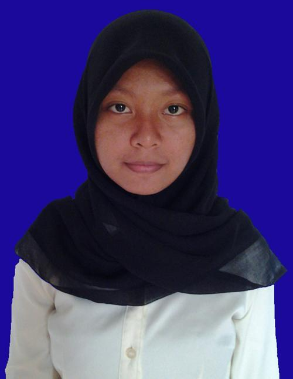

Retno Palupi, dilahirkan di Perbaungan-Medan(SUMUT) pada tanggal 4 september 1997.
Merupakan mahasiswi Universitas Gadjah Mada departemen Ilmu Komputer dan Elektronika dengan konsentrasi bidang Ilmu Komputer sejak tahun 2015.
Pengalaman Organisasi:
*pernah menjadi anggota BEM KM FMIPA UGM tahun 2015 departemen Medinfo. Saat ini masih menjadi anggota OmahTI UGM divisi Sistem Informasi.

di sebelah kanan ini adalah foto saya--------)
karya
*pernah membuat beberapa produk pesawat terbang berbahan dasar kertas buku tulis yang dilipat sedemikian rupa sehingga bisa terbang dengan seimbang.
*pernah menjadi koki terbaik pada saat lomba tingkat anak-anak disebelah rumah saya, dengan menu andalan rumput goreng lado hijau.